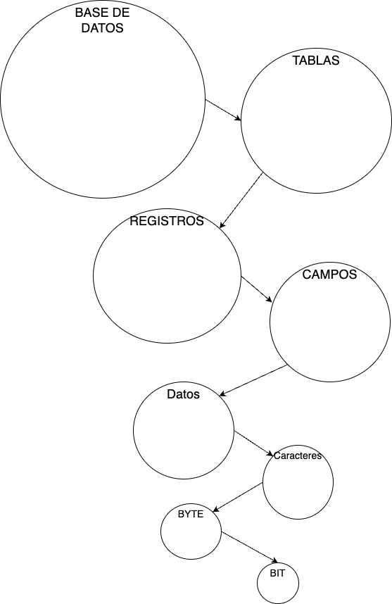
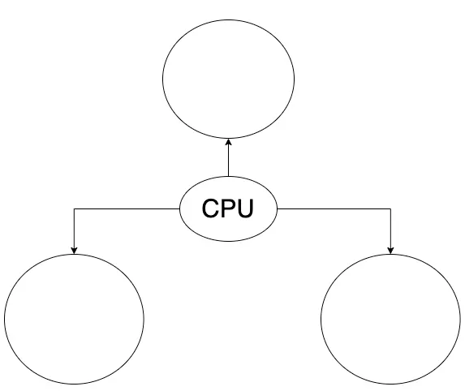
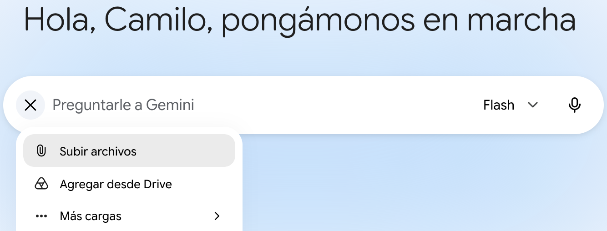

Guía 1002: Tema de proyecto¶
|
|

Exploración Estructuración Actividad práctica Transferencia
Temática: Reflexión sobre la Ofimática y Programación.
Objetivo de aprendizaje: Identificar el nivel de interés del estudiante sobre las temáticas de Ofimática, Programación, Redes y Mantenimiento.
DESEMPEÑO: Identifica y reflexiona sobre su interés en las áreas de ofimática, programación, redes y mantenimiento, comprendiendo conceptos fundamentales del software, desarrollo, seguridad en redes y sistemas tecnológicos para la elección de su proyecto de grado.
Componente: Uso y apropiación de la Tecnología y la Informática.
Competencia: Genero propuestas innovadoras para el uso y aprovechamiento de productos tecnológicos.
Evidencia de aprendizaje: Utilizo adecuadamente herramientas informáticas para la búsqueda, organización, procesamiento, sistematización, comunicación y difusión de ideas.
Actividades desarrolladas en su totalidad.
Participación en clase.
Explicación clara de conceptos.
Argumentación de ideas.
Cumplimiento de las reglas del aula.
Mensaje del autor¶
“Esta guía ayuda al estudiante a identificar o descubrir su interés por alguna de las temáticas de Ofimática, Programación, Redes y Mantenimiento. Esto es importante para evitar que el estudiante tenga dificultades en el desarrollo de su proyecto de grado”.
—Camilo Fonseca
A00: Introducción (5%)¶
Exploración
Transcriba en su cuaderno el objetivo, las orientaciones curriculares y los criterios de evaluación de la presente guía.
En su cuaderno, describa con sus palabras el significado de la siguiente frase:
“En el desarrollo del proyecto de grado, el estudiante entre más intranquilo esté en grado décimo, más tranquilo estará en grado once”.
A01: Análisis y reflexión (OFIMÁTICA) (5%)¶
Estructuración
LEA el siguiente resumen:
RESUMEN OFIMÁTICA
En una hoja de cuaderno, cree un mapa conceptual con los títulos del RESUMEN OFIMÁTICA.
Acorde al contenido del resumen de OFIMÁTICA, en su cuaderno responda las siguientes preguntas:
Preguntas de reflexión
¿Qué aspecto de la ofimática le parece más interesante o útil para su vida académica o personal?
¿Le gustaría aprender más sobre alguna herramienta específica de ofimática, como Google Workspace o Microsoft 365? ¿Cuál y por qué?
¿Cree que el manejo de herramientas ofimáticas puede facilitar su trabajo diario o sus estudios? ¿Qué le motiva o desmotiva de esta temática?
¿Le interesa conocer y usar programas cuyo código fuente está disponible para que cualquiera pueda estudiarlo y modificarlo? (¿por qué?)
¿Ha utilizado alguna vez software libre como LibreOffice, GIMP o Linux? ¿Qué le pareció la experiencia?
Cree que es importante que el software sea accesible y modificable por todos, sin restricciones de licencia propietaria? (¿por qué?)
¿Le gustaría aprender a contribuir con proyectos de software libre, como mejorar programas o crear nuevas herramientas? (¿por qué?)
¿Qué opina sobre la idea de compartir y colaborar en el desarrollo de software en lugar de usar programas cerrados y comerciales?
¿Le atrae la posibilidad de personalizar el software que usa para adaptarlo a sus necesidades específicas? (¿por qué?)
¿Considera que el software libre puede ser una alternativa viable y segura frente al software propietario? (¿por qué?)
En una hoja al final de su cuaderno, desarrolle un texto reflexivo utilizando sus respuestas como guía para estructurar su escrito. El título de su texto reflexivo es: TEMA OFIMÁTICA.
A02: Análisis y reflexión (PROGRAMACIÓN) (5%)¶
Estructuración
LEA el siguiente resumen:
RESUMEN PROGRAMACIÓN
En una hoja de cuaderno, cree un mapa conceptual con los títulos del RESUMEN PROGRAMACIÓN.
Acorde al contenido del resumen de PROGRAMACIÓN, en su cuaderno responda las siguientes preguntas:
Preguntas de reflexión
¿Se siente motivado al pensar que, mediante la creación de código, se pueden dar instrucciones exactas a una computadora para que resuelva un problema complejo por usted? (¿por qué?)
Al conocer la diferencia entre programador y desarrollador, ¿le atrae más la parte técnica de “escribir código” para construir funcionalidades específicas, o le interesa más la visión global de “planificar y gestionar” todo el ciclo de vida de un software? (¿por qué?)
Sobre el software y la innovación: Al entender que existen diferentes tipos de software (sistema, aplicación, embebido, programación), ¿hay alguna categoría en particular que le genere curiosidad sobre cómo se construyen o cómo funcionan por dentro? (¿por qué?)
De las tecnologías mencionadas (bases de datos, servidores web, entornos como Node.js o Frameworks), ¿hay alguna que le entusiasme aprender a usar para crear tu propio proyecto? (¿por qué?)
¿Qué parte del desarrollo web le parece más interesante: el Front-end (crear la parte visual con la que interactúan los usuarios) o el Back-end (trabajar con la lógica, servidores y bases de datos que hacen que todo funcione)? (¿por qué?)
De los lenguajes mencionados (HTML, CSS, JavaScript, PHP, Java, Python), ¿alguno te llama especialmente la atención para empezar a crear sus primeros programas o sitios web? (¿por qué?)
Considerando que el desarrollo de software implica análisis, diseño, pruebas y mantenimiento, ¿le atrae la idea de enfrentar el reto de identificar errores y optimizar código para mejorar continuamente una aplicación? (¿por qué?)
Después de analizar cómo los datos simples se transforman en información útil para la toma de decisiones, ¿considera que comprender la jerarquía de datos cambia tu perspectiva sobre cómo la tecnología influye en tu vida cotidiana?. ¿Tendría interés en profundizar cómo se organiza la información en sistemas complejos?
Después de conocer que los diagramas de flujo nos permiten visualizar procesos paso a paso para resolver problemas de manera organizada, ¿se siente cómodo(a) utilizando esta herramienta gráfica para planear sus propias soluciones, o prefiere otro método para organizar sus ideas? (¿por qué?)
Considerando que los algoritmos nos permiten descomponer cualquier situación de la vida diaria en una secuencia de pasos claros para resolverla, ¿qué tan interesante le resulta el desafío de diseñar instrucciones precisas para que otros (o una computadora) puedan completar una tarea siguiendo su lógica, o prefiere otro tipo de desafíos intelectuales? (¿por qué?)
En una hoja al final de su cuaderno, desarrolle un texto reflexivo utilizando sus respuestas como guía para estructurar su escrito. El título de su texto reflexivo es: TEMA PROGRAMACIÓN.
A03: Análisis y reflexión (REDES) (5%)¶
Estructuración
LEA el siguiente resumen:
RESUMEN REDES
En una hoja de cuaderno, cree un mapa conceptual con los títulos del RESUMEN REDES.
En su cuaderno, responda las siguientes preguntas:
¿Qué es una red de datos?
¿En que se diferencian el INTERNET de una Intranet?
¿En que se diferencian los dispositivos de tipo cliente y los dispositivos de tipo servidor?
¿Por que existen los dispositivos todo en uno?
¿Que son los servicios de red?
Escriba las siguientes frases en su cuaderno y responda si es falso o verdadero y diga el por qué:
INTERNET permite conectar personas al rededor el mundo así como acceder a diferentes servicios en la nube. ___
En un INTRANET se deben tener accesos restringidos. No todo el mundo puede ingresar. ___
INTERNET interconecta varias INTRANETS de forma controlada. ___
A la página web de la institución educativa John F. Kennedy solo se puede acceder desde la INTRANET. ___
La INTRANET del portal del aula 115 se puede acceder desde cualquier lugar del mundo. ___
En su cuaderno haga un dibujo junto con una corta descripción de los siguientes dispositivos:
Servidores.
Equipos cliente.
Switch.
Access Point.
Router.
Modem.
El siguiente es un plano de la ubicación de diferentes dispositivos* del aula 115 de la Institución Educativa John F. Kennedy. En una hoja de cuaderno, identifique en el plano los siguientes dispositivos:
11 portátiles (numerarlos)
11 PCs de escritorio (numerarlos)
1 impresora
1 smart-TV
1 servidor
1 switch
1 modem
ATENCIÓN: El plano puede estar desactualizado. En ese caso ajustar el plano al estado actual del aula.

Plano de red aula 115¶
Con el plano anterior terminado, conecte los dispositivos de la siguiente forma:
Dibuje con líneas continuas, las conexiones de los dispositivos que están conectados con cable de red a la INTRANET.
Dibuje con líneas interlineadas, las conexiones de los dispositivos que están conectados de forma inalámbrica a la INTRANET.
Copie la siguiente sopa de letras en su cuaderno e IDENTIFIQUE 10 ejemplos de servicios de red:

Servicios de red¶
Ejemplo:
FIREWALL: Supervisa y controla un tráfico de red en base a unas reglas de seguridad.
Complete la siguiente tabla en su cuaderno:
Aspecto
Seguridad de la Información
Seguridad Informática
Enfoque
Amenazas
Elementos
En su cuaderno escriba y analice los siguientes casos e indique cual de los 3 principios de la seguridad de la información se ajusta a dicho caso. Justifique su respuesta.
CASO 01: Por medio de un ataque cibernético el día de ayer a la empresa X le robaron toda la información personal de sus empleados. Ahora sus datos como su localización, teléfono y lugar de nacimiento están expuestos en internet. Esto dio a que suplantaran muchas identidades.
CASO 02: Debido a un software malicioso en los servidores principales del banco X los servicios de cajero automático no van a estar disponibles por 2 días. Esto hará que muchas personas pierdan su confianza en la nueva planta administrativa del banco elegida recientemente.
CASO 03: Un error humano de un técnico practicante modificó la información en las bases de datos de la nómina de este mes. Esto genera incumplimiento en el pago de salarios de los trabajadores de la empresa. Los funcionarios tendrán que esperar una semana más para que reciban su sueldo.
Suponga que usted es un juez de delitos informáticos. Copie y analice los siguientes casos en su cuaderno, e imponga las penas necesarias según la ley 1273 del 2009:
CASO 01: El acusado se declara culpable de haber clonado el sitio web y así engañar a varias amas de casa vendiéndoles productos falsos de aseo.
CASO 02: La víctima testificó con evidencia probatoria que sus comunicaciones fueron interceptadas por su ex-esposa mientras conducía la noche anterior.
CASO 03: El ingeniero accedió sin permiso al sistema empresarial. Esto fue 24 horas después de haber sido despedido. Por tanto todos sus accesos ya habían sido retirados. Sin embargo previamente había dejado una backdoor.
Acorde al contenido del resumen de REDES, en su cuaderno responda las siguientes preguntas:
Preguntas de reflexión
¿Le genera curiosidad saber cómo viaja la información desde un dispositivo hasta un servidor en otro continente? ¿Por qué?
Cuando el internet falla en casa, ¿Se siente motivado por intentar diagnosticar si es un problema del módem, del cableado o de la señal inalámbrica? ¿Por qué?
¿Le llama la atención la idea de configurar dispositivos para que otras personas puedan comunicarse de forma segura dentro de una organización (Intranet)? ¿Por qué?
¿Prefiere entender cómo funciona un “Switch” o un “Router” por dentro en lugar de simplemente usarlos como cajas negras que dan internet? ¿Por qué?
¿Le parece interesante el concepto de “Hacking Ético” como una forma de ayudar a las empresas a protegerse, en lugar de ser solo un hacker malicioso? ¿Por qué?
¿Siente curiosidad por aprender a detectar vulnerabilidades en páginas web (como inyecciones SQL o XSS) para poder corregirlas? ¿Por qué?
¿Le interesaría aprender a administrar servidores de forma remota, trabajando mediante líneas de comandos y protocolos seguros como SSH? ¿Por qué?
¿Le motiva aprender sobre leyes y normas (como la Ley 1273 de 2009 en Colombia) para entender qué es legal y qué no en el entorno digital? ¿Por qué?
¿Le gustaría trabajar en el diseño de planes de seguridad para proteger activos críticos, asegurando que la información sea confidencial, íntegra y disponible? ¿Por qué?
¿Le gustaría la idea de estar constantemente actualizado sobre nuevas amenazas informáticas para implementar medidas de defensa como Firewalls o cifrados avanzados? ¿Por qué?
En una hoja al final de su cuaderno, desarrolle un texto reflexivo utilizando sus respuestas como guía para estructurar su escrito. El título de su texto reflexivo es: TEMA REDES.
{kind=link}
{kind=link}
A04: Análisis y reflexión (MANTENIMIENTO) (5%)¶
Estructuración
LEA el siguiente resumen:
RESUMEN MANTENIMIENTO
En una hoja de cuaderno, cree un mapa conceptual con los títulos del RESUMEN MANTENIMIENTO.
Dibuje la siguiente pirámide en su cuaderno. Dividirla en 5 secciones y en cada sección escriba (según su criterio) 1 razón por la cual es importante realizar mantenimientos regularmente. Colocar una razón por cada sección. La base de la pirámide es la razón menos importante.

Nivel de importancia¶
En su cuaderno escriba los siguientes casos, luego especifique que tipo de mantenimiento haría por cada caso y explique por qué:
CASO 01: “El lote de equipos de cómputo que recién llegaron a la empresa es de la misma tecnología del lote de equipos anteriores. Serán asignados a las oficinas de secretaría y tesorería. La última vez en que fallaron los equipos, los funcionarios trabajaron con su celular. Ese día al final entregamos el pedido al cliente a tiempo”.
CASO 02: “La máquina de torno llegó hace dos días y nada que se ha puesto en producción. Estamos perdiendo $6,000,000 al día. Este rublo es considerado crítico. Se espera que la máquina esté en producción a más tardar en tres días y garantizar que funcione 24/7”.
CASO 03: “Este año tampoco llegaron computadoras nuevas al colegio. Así que tenemos que volver a usar los equipos obsoletos de hace 8 años. Necesitamos la ayuda de los estudiantes para que cuiden estos equipos. Asimismo, para extender la vida útil de los equipos, será necesario instalar el sistema operativo LINUX”.
Responda las siguientes preguntas en su cuaderno:
¿Cómo funciona la electricidad?
¿De que forma se transmite la electricidad?
Describa y dibuje en su cuaderno 5 dispositivos electrónicos, luego por cada uno responda:
¿Que tocaría hacer si no existiera dicho dispositivo electrónico?
Consulte en INTERNET qué es una PANEL SOLAR, también consulte los precios de compra e instalación de paneles solares en el municipio. Luego escriba la información consultada en el cuaderno. (También escribir los enlaces a la página web donde encontró la información).
Complete la siguiente tabla en su cuaderno:
Característica
Electricidad
Electrónica
Definición
Aplicaciones
Componentes
En INTERNET, consulte 5 ejemplos de proyectos que se pueden hacer usando ARDUINO y describirlos en su cuaderno (incluya dibujos).
En INTERNET, consulte 5 ejemplos de proyectos que se pueden hacer usando una raspberry Pi y describirlos en su cuaderno (incluya dibujos).
Acorde al contenido del resumen de MANTENIMIENTO, en su cuaderno responda las siguientes preguntas:
Preguntas de reflexión
En el mantenimiento, ¿se ve más como alguien que planifica todo para que nada falle (preventivo) o como la persona que llega a salvar el día cuando algo ya se rompió (correctivo)? (¿Por qué?)
¿Le parece valioso aprender a revisar un equipo periódicamente para predecir cuándo va a fallar antes de que ocurra un desastre? (¿Por qué?)
¿Le entusiasma más la idea de trabajar con grandes energías, motores y voltajes altos (electricidad), o prefiere el mundo detallado de procesar información con voltajes pequeños (electrónica)? (¿Por qué?)
¿Le parece interesante que toda la tecnología actual funcione mediante la combinación de ceros y unos para que sea precisa y confiable? (¿Por qué?)
Al ver un dispositivo electrónico o eléctrico por dentro, ¿siente curiosidad de entender qué función cumplen componentes como las resistencias, los transistores o los diodos? (¿Por qué?)
¿Le agrada la idea del hardware libre, donde usted puede ver los planos de un invento para aprender de él o incluso mejorarlo? (¿Por qué?)
¿Le motiva aprender a escribir instrucciones para que un cerebro electrónico (micro-controlador) interactúe con el mundo físico y no se quede solo dentro de una pantalla? (¿Por qué?)
¿Le genera curiosidad saber por qué un micro-procesador es tan veloz pero un micro-controlador es más práctico para realizar tareas por sí solo? (¿Por qué?)
¿Aceptaría el reto de configurar su propio ordenador del tamaño de una tarjeta de crédito e instalar sistemas operativos como Linux? (¿Por qué?)
¿Le llama la atención aprender sobre el hardware libre (ARDUINO o Raspberry PI) (¿Por qué?)
En una hoja al final de su cuaderno, desarrolle un texto reflexivo utilizando sus respuestas como guía para estructurar su escrito. El título de su texto reflexivo es: TEMA MANTENIMIENTO.
A05: Elección del tema (25%)¶
Actividad práctica
Descargue el siguiente documento:
Formulario elección TEMA Descargar
Abra el documento descargado y escribir la fecha, el grado y sus nombres.
En cada una de las secciones de reflexión del documento, transcribir los textos escritos al final de su cuaderno (al momento de transcribir, corregir cualquier error de ortografía o mala redacción).
Guarde los cambios y cierre el documento.
INICIE SESIÓN con su cuenta institucional y acceda la IA GEMINI de Google:
En el menú de Google Gemini, pulse el botón (+) y dar clic en la opción de subir archivos.

Google Gemini¶
Seleccione el documento formularioTema.odt que acabó de editar.
Con el documento en GOOGLE GEMINI, realizar la siguiente pregunta a la IA:
Acorde al contenido del archivo, ¿Cuál de los siguientes temas (OFIMÁTICA, PROGRAMACIÓN, REDES o MANTENIMIENTO) me recomienda para mi proyecto de grado?
Abra nuevamente el documento formularioTEMA.odt y en la sección: RESPUESTA IA, copiar y pegar la respuesta de la IA de GEMINI.
Guarde los cambios y cierre el documento.
{kind=link}
A06: Envío de correo (50%)¶
Transferencia
Ingrese al correo electrónico de su cuenta institucional y envíe un correo electrónico al siguiente remitente:
Correo: proyectos.grado@jfkennedy.edu.co
Asunto: TEMA ELEGIDO: {nombre del tema}
Adjunte el archivo formularioTEMA.odt
En el contenido del correo responda las siguiente preguntas:
¿Por qué le llama la atención el tema elegido?
El tema elegido, ¿lo observó en alguna película, serie, novela, videojuego, en la calle, etc.?
El tema elegido, ¿está relacionado con lo que desea ser en su vida? (Si está relacionado, ¿Cómo el tema elegido podría ayudarle?)
¿Tiene algún familiar, amigo o conocido que le pueda ayudar con el tema elegido?
¿De qué forma el tema elegido podría favorecer a usted o a su familia?
¿Tiene alguna experiencia previa (estudios, trabajos, juegos, negocios, etc.) relacionada con el tema elegido?
Enviar el correo electrónico.